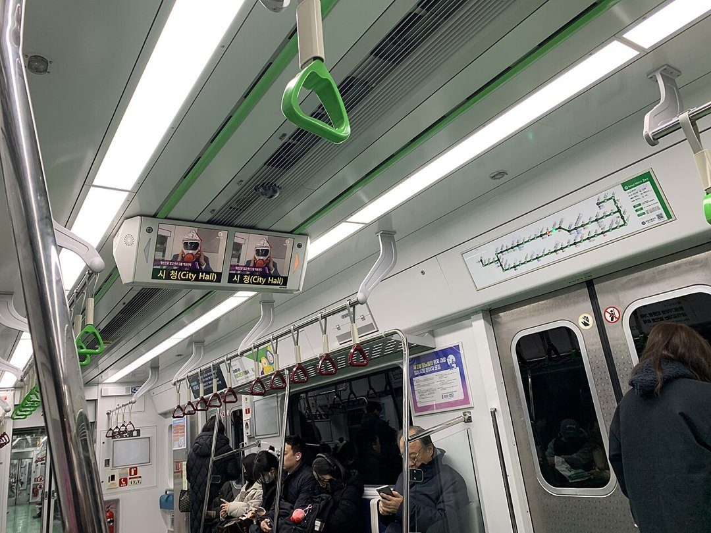

본문
📷 사진 1 자리

▲ 서울 지하철 2호선 열차 · 사진: Mtattrain / CC BY-SA 4.0 / 위키미디어 공용
서울교통공사노조가 11월 20일 첫차 근무부터 준법투쟁에 들어갔어요. 열차 횟수는 그대로지만 역마다 정차가 길어지면서 몇 분씩 늦어질 수 있어요. 노조는 협상이 안 되면 25일부터 무기한 총파업을 하겠다고 예고했어요.
오늘부터 무엇이 달라지나
기관사들은 운행 시각을 맞추려고 속도를 올리거나 정차 시간을 줄이지 않아요. 규정에 적힌 대로만 운전하는 방식이에요.
차량·시설·전기 분야에서는 위험 작업을 두 명이 함께하고, 특별점검이나 시간 외·휴일 근무를 거부해요. 서울교통공사는 하루 운행 횟수를 평소처럼 3,183회로 유지한다고 밝혔어요.
| 시간대 | 계획 배차 간격 |
|---|---|
| 출근 시간 | 2.5~4.5분 |
| 퇴근 시간 | 3~6분 |
| 평시 | 5~9분 |
혼잡한 역에는 본사 직원과 지하철 보안관이 나가고, 늦어지는 상황은 안내 방송으로 알려요.
2호선 성수지선 중단은 별개
20일 새벽 2호선 성수지선에서 열차가 정지신호를 넘어 선로전환기를 망가뜨렸어요. 이 때문에 성수역과 신설동역 사이 양방향 운행이 멈췄어요.
📷 사진 2 자리

▲ 서울 지하철 2호선 객실 · 사진: R151trains / CC0 / 위키미디어 공용
보도들은 이 사고를 준법투쟁과 별개 장애로 다뤘어요. 2호선 본선 내선·외선은 정상 운행했고 1호선 일부 열차가 늦게 출발했어요. 성수지선을 타는 분은 재개 여부를 먼저 보세요.
25일 총파업이 분기점
노조가 내건 요구는 크게 네 가지예요.
| 요구 | 내용 |
|---|---|
| 인력 감축 철회 | 2,212명 감축 계획 |
| 안전 인력 충원 | 현장 1,313명 |
| 임금 | 3.5% 인상 |
| 작업 방식 | 안전 업무 2인 1조 의무화 |
받아들여지지 않으면 25일 주간 근무부터 기한 없이 파업한다는 방침이에요. 아직 확정된 일정은 아니고 노사 교섭 결과에 따라 달라져요.
출근길 대처 순서
전날 밤이나 아침에 서울교통공사 공지와 '또타지하철' 앱에서 내가 타는 호선의 지연 안내를 확인하세요. 환승이 많은 역은 정차가 길어지면 차이가 커지니 10~20분 일찍 나서는 편이 안전해요.
버스로 바꿀 수 있는 구간이라면 경로를 미리 하나 더 찾아 두면 좋아요. 파업에 들어가면 서울시 비상 수송 대책 공지도 함께 보세요.
이번 준법투쟁은 운행 횟수를 줄이는 게 아니라 정차와 출발을 규정대로 하는 방식이라, 숫자상 배차는 같아도 승객이 몰리는 환승역과 퇴근길에서 지연이 더 크게 느껴질 수 있어요. 예고일이 25일 수요일이라 그 전 주말과 월·화요일 교섭 결과가 다음 주 출근길을 가르는 분기점이에요.
25일 파업 여부는 노사 교섭 결과가 나오는 대로 공사 누리집에 공지돼요. 화요일 밤에 한 번 더 확인해 두세요.
함께 보면 좋은 이슈
- 철도노조 12월 총파업 예고 연말 기차 예약 전 확인할 것
- 지하철 비상벨 언제 누를까? 불편 민원 신고 방법과 주의사항